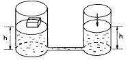
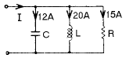
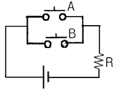
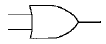
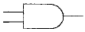
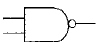
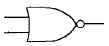

승강기기능사 (2003-01-26 기출문제)
1과목: 승강기개론
1. 건물 건축부문의 안전설계기준 중 카의 속도가 60∼90m/min인 경우 피트깊이는 최소 몇 m 가 되어야 하는가?
- 1.2
- 1.5
- 1.8
- 2.1
(정답률: 51%)

2. 비상정지장치와 관련이 없는 것은?
- 후렉시블 가이드 크램프형 세이프티
- 슬랙 로프 세이프티
- 조속기
- 턴버클
(정답률: 77%)
3. 유압식 엘리베이터의 최대 특징은?
- 고속 주행이 가능하다.
- 제어가 쉽다.
- 장치 주변을 청결하게 유지할 수 있다.
- 기계실의 위치가 자유롭다.
(정답률: 62%)
4. 에스컬레이터의 구동용 모터를 선정할 때 가장 큰 결정 요인은?
- 승강 높이
- 승강 속도
- 기계실 크기
- 수송 인원
(정답률: 49%)
5. 천정 비상구에 대한 설명 중 틀리는 것은?
- 카 내에 승객이 갇혀 있을 때 구출을 목적으로 설치한다.
- 카 안에서 열리지 않고, 케이지 외측에서 열도록 되어 있다.
- 비상구가 열려 있는 동안에는 승강기 운전이 불가능하다.
- 카 위를 점검하는 점검구로 통상 사용하여도 무방하다.
(정답률: 60%)
6. 균형추를 사용한 화물용 승강기에서 제동기(Brake)의 제동력은 적재하중의 몇 % 까지인가?
- 100
- 110
- 120
- 130
(정답률: 55%)
7. 언더 컷(under cut) 홈 시브에 대한 설명으로 틀린 것은?
- 로프와 시브의 마찰계수를 높히기 위한 것이다.
- 로프 마모율이 비교적 심하지 않다.
- 주로 싱글 랩핑(1:1로핑)에 사용된다.
- 홈의 형상은 시브 홈의 밑을 도려낸 것이다.
(정답률: 52%)
8. 순간식 비상정지장치가 적용되는 승강기는?
- 45m/min이하의 승강기
- 60~1⑤m/min의 승강기
- 120~140m/min의 승강기
- 300m/min이상의 승강기
(정답률: 56%)
9. 카 문의 안전보호장치인 세이프티 슈(Door Safety shoe)의 역할은?
- 문이 원활하게 열리도록 하는 역할
- 문의 개폐작동을 중지시키는 역할
- 닫히는 문을 다시 열리게 하는 역할
- 과부하시에 출발하지 못하도록 하는 역할
(정답률: 61%)
10. 엘리베이터의 속도에 영향을 미치지 않는 것은?
- 감속기
- 편향 도르레의 직경
- 전동기 회전수
- 권상 도르레의 직경
(정답률: 62%)
11. 유압회로에서 속도 변동을 작게 하기 위한 압력 보상기구는?
- 유량 제어밸브
- 레벨링밸브
- 유량 조정밸브
- 럽쳐밸브
(정답률: 36%)
12. 수평보행기의 스탭이 금속제로 된 것을 무엇이라고하는가?
- 고무벨트식
- 파레트식
- 군관리방식
- 계단식
(정답률: 66%)
13. 피트바닥 하부의 사용에 대한 설명으로 적합하지 못한 것은?
- 기본적으로는 거실 등으로 사용하지 않아야 한다.
- 거실 등으로 사용하기 위해서는 피트바닥을 2중 슬라브로 하고, 균형추쪽에도 비상정지장치를 설치하여야 한다.
- 거실 등으로 사용하기 위해서는 피트바닥을 2중 슬라브로 하고, 균형추쪽 직하부에 두꺼운 벽을 설치하여야 한다.
- 여러 사람이 출입하는 통로로 사용하기 위해서는 피트바닥을 2중 슬라브로 하면 된다.
(정답률: 38%)
14. 승객용 엘리베이터에서 각층 강제정지 운전의 목적으로 가장 적합한 것은?
- 출·퇴근 시간대에 모든 층의 승객에게 골고루 서비스 제공
- 각 층의 도어장치 기능의 원활한 작동
- 각 층의 도어장치 확인시 사용
- 카 안의 범죄활동 방지
(정답률: 71%)
15. 비상용 엘리베이터에서 카 및 승강장 문이 열려 있어도 카를 승강시킬 수 있는 기능의 종류로 맞는 것은?
- 비상호출 기능
- 1차 소방운전
- 2차 소방운전
- 3차 소방운전
(정답률: 40%)
2과목: 안전관리
16. 교류 엘리베이터에서 사용하지 않는 제어방식은?
- 교류 2단속도 제어방식
- 교류 궤환전압 제어방식
- 가변용량 가변전류 제어방식
- 가변전압 가변주파수 제어방식
(정답률: 53%)
17. 전동기의 역률을 개선하기 위하여 사용되는 것은?
- 저항기
- 전력용콘덴서
- 직렬리액터
- 트립코일
(정답률: 59%)
18. 경사각 30虔이하의 에스컬레이터 디딤판의 최소 규격은?
- 주행방향 길이 360mm 이상, 폭 560mm 이상
- 주행방향 길이 360mm 이상, 폭 400mm 이상
- 주행방향 길이 400mm 이상, 폭 560mm 이상
- 주행방향 길이 400mm 이상, 폭 400mm 이상
(정답률: 37%)
19. 기계기구에 대한 방호조치의 짝으로 옳은 것은?(오류 신고가 접수된 문제입니다. 반드시 정답과 해설을 확인하시기 바랍니다.)
- 리프트-조속기
- 에스컬레이터-파킹장치
- 크레인-역화방지기
- 승강기-과부하방지장치
(정답률: 66%)
20. 작업자의 안전을 위하여 작업을 중지시킬 수 있는 조건으로 볼 수 없는 것은?
- 퇴근시간이 경과하였을 때
- 우천, 강풍, 강설 등의 악천후일 때
- 지상에서 작업원이 확실하게 보이지 않을 정도의 짙은 안개가 끼었을 때
- 작업원이 감당하기 어려울 정도의 추위일 때
(정답률: 84%)
21. 화상을 입은 환자를 응급치료하는 동안 물을 먹고 싶어한다. 어느 방법이 가장 좋은가?
- 적은 양의 물을 한번만 준다.
- 한번에 많은 물을 먹여야 한다.
- 여러번 조금씩 나누어 먹인다.
- 절대로 물을 주면 안된다.
(정답률: 76%)
22. 정전기 제거의 방법으로 옳은 것은?
- 설비의 주변에 자외선을 쬐인다.
- 설비의 주변 공기를 건조시킨다.
- 설비의 주변에 적외선을 쬐인다.
- 설비의 금속체 부분을 접지시킨다.
(정답률: 70%)
23. 나이프스위치의 충전부가 노출되면 무엇이 위험한가?
- 누전
- 감전
- 과부하
- 과열
(정답률: 72%)
24. 안전보건 표지의 종류가 아닌 것은?
- 금지
- 방향
- 경고
- 안내
(정답률: 66%)
25. 정전작업 중에 특히 유의할 사항은?
- 명령계통을 일원화 시킨다.
- 주변 사람들에게 감시 시키면서 작업한다.
- 작업량을 정하여 작업시킨다.
- 시간을 잘 지켜 작업하도록 유도한다.
(정답률: 46%)
26. 권상기의 기준이 아닌 것은?
- 역구동이 잘 될 것
- 전동기 본체의 접지가 되어 있을 것
- 주로프와의 사이에 슬립이나, 시브에 균열 등이 없을 것
- 감속기구가 있는 것은 기어 톱니의 두께가 설치시의 7/8 이상일 것
(정답률: 33%)
27. 승강기 사용상 주의사항이 틀린 것은?
- 비상스위치는 엘리베이터 기술자만이 사용해야 한다.
- 도어에 기대거나 충격을 주어서는 안된다.
- 승장 및 카 도어에 이물질이 끼이지 않아야 한다.
- 카 내부에서 용변을 보거나 오물을 버려서는 안된다.
(정답률: 85%)
28. 로프식 승강기로 짝지어진 것은?
- 직접식과 간접식
- 견인식과 권동식
- 견인식과 직접식
- 권동식과 간접식
(정답률: 63%)
29. 로프의 미끄러짐현상을 줄이는 것과 거리가 먼 것은?
- 권부각을 크게 한다.
- 가감속도를 완만하게 한다.
- 보상체인이나 로프를 설치한다.
- 카 자중을 가볍게 한다.
(정답률: 63%)
30. 카 상부에서 행하는 검사가 아닌 것은?
- 가이드레일 손상 유무
- 비상구출구스위치 동작 여부
- 인터록스위치 동작 여부
- 모터절연상태 검사
(정답률: 35%)
3과목: 승강기보수
31. 응급조치에 따른 승강기 보수작업으로 적당한 순서는?
- 보수내용 청취 → 현장 정돈(응급조치) → 안전용구 착용 → 자재반입 및 신호 → 작업 착수
- 보수내용 청취 → 안전용구 착용 → 자재반입 및 신호 → 현장 정돈(응급조치) → 작업 착수
- 안전용구 착용 → 보수내용 청취 → 현장 정돈(응급조치) → 자재반입 및 신호 → 작업 착수
- 현장 정돈(응급조치) → 보수내용 청취 → 안전용구 착용 → 자재반입 및 신호→ 작업 착수
(정답률: 35%)
32. 엘리베이터 카 도어의 구성부품이 아닌 것은?
- 균형체인
- 도어슈
- 링크
- 행거
(정답률: 55%)
33. 브레이크의 제동력은 보통 얼마 정도로 한정하고 있는가?
- 0.1G
- 0.2G
- 0.3G
- 0.4G
(정답률: 48%)
34. 유압승강기에 사용되는 안전밸브의 설명으로 옳은 것은?
- 승강기의 속도를 자동으로 조절하는 역할을 한다.
- 압력배관이 파열되었을 때 작동하여 카의 낙하를 방지한다.
- 카가 최상층으로 상승할 때 더 이상 상승하지 못하게 하는 안전장치이다.
- 작동유의 압력이 정격압력이상이 되었을 때 작동하여 압력이 상승하지 않도록 한다.
(정답률: 58%)
35. 승용승강기의 카내에는 램프중심으로부터 2m 떨어진 수직 면상에서 몇 lx 이상의 조도를 확보할 수 있는 예비조명 장치가 있어야 하는가?(관련 규정 개정으로 정답이 바뀌었습니다. 애기서는 이전정답인 2번을 누르면정답 처리 됩니다.)
- 0.5
- 1
- 2
- 3
(정답률: 61%)
36. 에스컬레이터가 상승 도중 갑자기 역전하여 하강하였을 경우의 원인으로 볼 수 없는 것은?
- 구동체인 안전스위치의 고장
- 브레이크의 고장
- 스커트가드 안전스위치의 고장
- 스탭체인 안전스위치의 고장
(정답률: 49%)
37. 에스컬레이터의 스커트 가드판과 스탭사이에 인체의 일부나 옷, 신발 등이 끼었을 때 동작하여 에스컬레이터를 정지시키는 안전장치는?
- 스텝체인 안전장치
- 스커트 가드 안전장치
- 구동체인 안전장치
- 핸드레일 안전장치
(정답률: 72%)
38. 비상정지장치의 성능시험에 관한 설명 중 틀린 것은?
- 적용 최대 중량에 상당하는 무게를 적용한다.
- 가이드 레일의 윤활상태를 실제의 사용상태와 같도록 한다.
- 비상정지의 시험후 완충기의 파손 유무를 확인한다.
- 비상정지의 시험후 수평도와 정지거리를 측정한다.
(정답률: 45%)
39. 로프식 승용승강기에 대한 사항 중 옳지 않은 것은?
- 카내에는 외부와 연락되는 통화장치가 있어야 한다.
- 카내에는 용도, 적재하중(최대 정원) 및 비상시 조치 내용의 표찰이 있어야 한다.
- 카바닥 끝단과 승강로 벽사이의 거리는 150mm이하 이어야 한다.
- 카바닥은 수평이 유지되어야 한다.
(정답률: 79%)
40. 유압잭의 부품이 아닌 것은?
- 사이렌서
- 플런저
- 패킹
- 더스트 와이퍼
(정답률: 38%)
41. 미터인회로를 사용한 제어방식의 특징 중 잘못 설명된 것은?
- 유량제어밸브를 파일로트 회로에 의해 제어하므로 작동유의 온도나 압력변화 등의 영향을 받기 쉽다.
- 카의 기동시 유량 조정이 어렵다.
- 기동 쇼크가 발생하기 쉽다.
- 상승 운전시의 효율이 나쁘다.
(정답률: 22%)
42. 유압식 승강기의 파워유니트의 구성품이 아닌 것은?
- 펌프
- 유량제어밸브
- 체크밸브
- 실린더
(정답률: 47%)
43. 도르래의 로프홈에 언더커트(Under Cut)을 하는 목적은?
- 로프의 중심 균형
- 윤활 용이
- 마찰계수 향상
- 도르래의 경량화
(정답률: 61%)
44. 교류 전동기를 사용하지 않는 방식은?
- VVVF 방식
- 정지 레오나드 방식
- 교류 궤환전압 제어방식
- 교류 2단 속도 제어방식
(정답률: 68%)
45. 초고속 엘리베이터에 주로 적용되는 조속기의 종류로 옳은 것은?
- 디스크형
- 디스크형과 롤 세이프티형
- 롤 세이프티형
- 플라이볼형
(정답률: 65%)
4과목: 기계,전기기초이론
46. 객석부분이 가변 축의 주위를 회전하는 것으로 회전운동외에 승강운동도 할 수 있는 구조로 된 유희 시설물은?
- 회전목마
- 코스터
- 회전그네
- 옥토퍼스
(정답률: 35%)
47. 파스칼의 원리를 보여주는 다음 그림에서 서로 관통하는 두 원기둥 파이프의 지름이 각각 20cm, 10cm일 때 지름 20cm 원판위의 상자무게가 10kg이라면 지름 10cm 원판에는 몇 kg·중의 힘을 가해야 양쪽이 균형을 이루겠는가?

- 2.5
- 5
- 20
- 40
(정답률: 24%)
48. 정속도 운전에 알맞은 전동기는?
- 직권전동기
- 분권전동기
- 차동복권전동기
- 가동복권전동기
(정답률: 36%)
49. 전기기기에서 E종 절연의 최고 허용온도는 몇 ℃ 인가?
- 90
- 1⑤
- 120
- 130
(정답률: 49%)
50. 교류 아크용접기의 사용상의 주의사항이 아닌 것은?
- 탭전환은 반드시 아크발생을 중지시킨 후 시행한다.
- 1차측의 탭은 1차측의 전류, 전압의 변동을 조절하는 것이므로 2차측의 전류, 전압을 높이는데 사용한다.
- 정격사용률 이상으로 사용하지 않는다.
- 2차단자 한쪽과 용접 케이스는 접지를 확실히 한다.
(정답률: 50%)
51. 힘의 3대 요소에 해당되지 않는 것은?
- 방향
- 크기
- 작용점
- 속도
(정답률: 36%)
52. 다이오드, 트랜지스터 등의 반도체 스위칭회로를 무슨 회로라 하는가?
- 전자개폐기회로
- 유접점회로
- 무접점회로
- 과전류계전기회로
(정답률: 50%)
53. 그림에서 전류 Ｉ는 몇 A 인가?

- 17
- 19
- 23
- 49
(정답률: 28%)
54. 도어의 오픈방식 중 침대용이나 인하용에 주로 쓰이는 방식은?
- 센터 오픈방식
- 사이드 오픈방식
- 상개식(상부 열림방식)
- 상사개식(상부 하부 열림방식)
(정답률: 48%)
55. 안전률에 해당되는 것은?
- 허용응력 / 극한강도
- 극한강도 / 허용응력
- 허용응력 / 탄성한도
- 탄성한도 / 허용응력
(정답률: 56%)
56. 스프링의 세기를 나타내는 것은?
- 스프링의 전체 길이
- 스프링의 탄성상수
- 스프링의 강도
- 스프링의 유효길이
(정답률: 60%)
57. 캠이 가장 많이 사용되는 경우는?
- 요동운동을 직선운동으로 할 때
- 왕복운동을 직선운동으로 할 때
- 회전운동을 직선운동으로 할 때
- 상하운동을 직선운동으로 할 때
(정답률: 64%)
58. 유도 전동기에서 동기속도 NS와 극수 P와의 관계로 옳은 것은?
- NS ∝ P
- NS ∝ P2
- NS ∝ 1/P
- NS ∝ 1/P2
(정답률: 45%)
59. 회로도와 원리가 같은 논리기호는?





(정답률: 61%)
60. 권수가 400인 코일에서 0.1초사이에 0.5Wb의 자속이 변화 한다면 유도 기전력의 크기는 몇 V 인가?
- 100
- 200
- 1000
- 2000
(정답률: 49%)